Simulation Settings
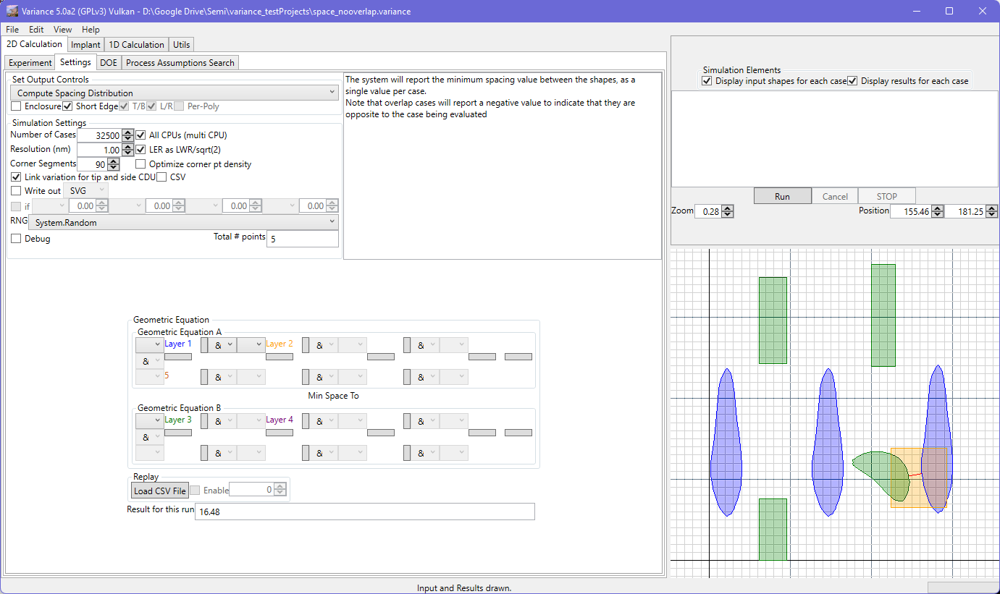
- Number of cases: The total number of cases to evaluate. Note that the engine will sometimes encounter a configuration that cannot be evaluated and will reject it, so the total number of results may differ from the number of cases you request.
- Resolution: This defines the minimum distance between points. This is used internally to fragment straight edges after the first stage of the shape generation. A second stage is used after LWR is applied, to try and ensure that large LWR values haven't unduly separated points on the edge. In the second stage, there is a limitation when there is insufficient space to fragment - at least 2x the resolution value is needed to inject a point, to have a distance >= resolution to the points either side.
- Corner Segments: The corners of the shapes are defined using a sweep from 0 to 90 degrees. This 90 degree sweep is divided up into segments. The more segments, the greater the accuracy (90 segments correspond to a 1 degree angular resolution). Note that this is overridden by the 'optimize corner pt density' option.
- LER as LWR/sqrt(2): This, when set, causes LER to be calculated with a larger value than the more conservative, but strictly incorrect, LWR/2 approach that is often used.
- Optimize corner pt density: When set, this overrides (if necessary) the angular resolution used to define corners. In this mode, the limiting factor wil be the linear distance between points, based on the edge resolution setting. This reduces calculation time significantly if the corners are packed tightly with points.
- Link variation for tip and side CDU: This correlates the variation between tip and side CDU for the runs. This matches the old tool behavior, but may not be desired in all cases.
- Total number of points: Just a readout of how many points make up the result contours.
The resolution and corner segment values allow you a good degree of control over the fidelity of the shapes being fed into the simulation engine, but do note that the increasing number of points will have an impact on calculation time per run. Nearest neighbor and chord length calculation time scales with increasing numbers of points.
There are some additional options available:
- Display results for each case : This draws the result out for the current case, in the preview region
- Display input shapes for each case: This draws the contours being delivered to the simulation engine for each case.
- Create SVG file for each case: This causes the tool to write out the input and output contours for each run to a numbered SVG file that can be referenced to the numbered result in the CSV output. Colors are preserved. NOTE : This will cause significant memory footprint as the contours are retained in memory until the end of the run.
- CSV. With this set, the default case, a CSV file will be generated with all of the result values and variation values. This can take some time for larger runs, and the files can also be large. Disabling this avoids the lengthy file generation, but it doesn't save any memory or CPU time during runs.
- Use all CPUs (multi CPU). With this active, all CPUs will be used for the simulation runs. With it deselected, one CPU core will be left free so that the user can do work as the simulation is processed.
- RNG Type. A choice of RNG is available to the user. Default is System.Random. Additionaly options are a Mersenne Twister or the Cryptographic RNG. The Mersenne Twister should be faster, but it hasn't been well benchmarked yet. The Cryptographic RNG adds a 10% overhead, but avoids a predictable distribution.
The top right ‘result for this run’ will report the value(s) determined for the current run.
To run on a single processor, use ‘Single CPU’, otherwise use ‘Multiple CPU’.
Note that during a multiple CPU run, the readout, progress bar and preview may update inconsistently and infrequently. This does not reflect the speed of the computation, but is just a consequence of the available spare capacity in the system to update the interface during the calculations. This should almost never happen for the usual case of the hardware-accelerated OpenGL viewports. For software OpenGL, the likelihood is higher. Slow machines will suffer more.
Geometric Equation
This is where the layer relationships are set up for the simulation. Note that the layer equation looks like this :
{[(Layer 1 AND/OR Layer 2) AND/OR (Layer 3 AND/OR Layer 4)] AND/OR [(Layer 5 AND/OR Layer 6) AND/OR (Layer 7 AND/OR Layer 8)]}
-------
{[(Layer 9 AND/OR Layer 10) AND/OR (Layer 11 AND/OR Layer 12)] AND/OR [(Layer 13 AND/OR Layer 14) AND/OR (Layer 15 AND/OR Layer 16)]}
This reflects the internal flow - the layers are processed piecewise in the way described above.
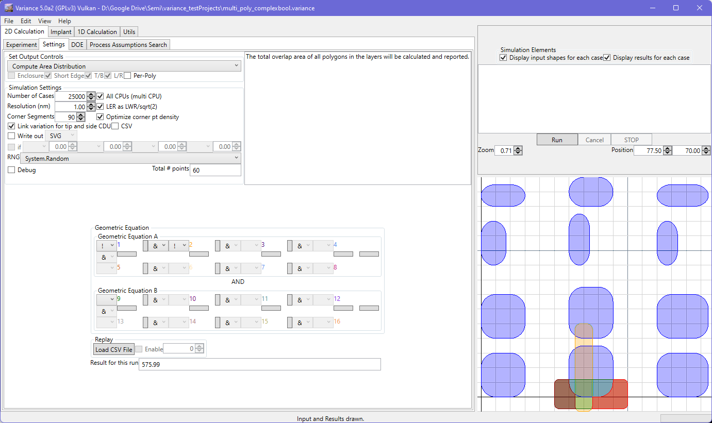
Area
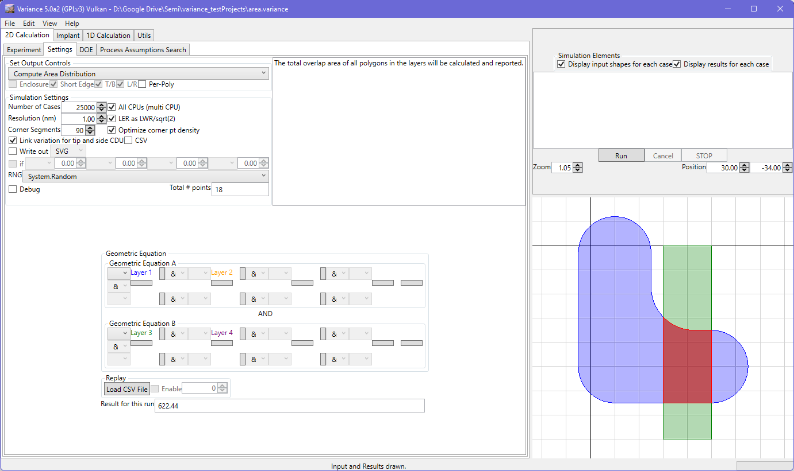
By default, the total area is output in the current version of the system, summed across all input polygons. For multi-polygon cases where a minimum overlap area calculation is desired, the 'Per Poly' option can be set. One such example would be contact hole evaluations.
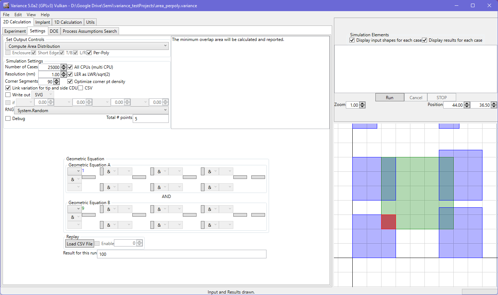
Distance (Spacing/Enclosure, Overlap)
When the shapes do not overlap, distance finds the minimum distance between points on one shape and points on the other.
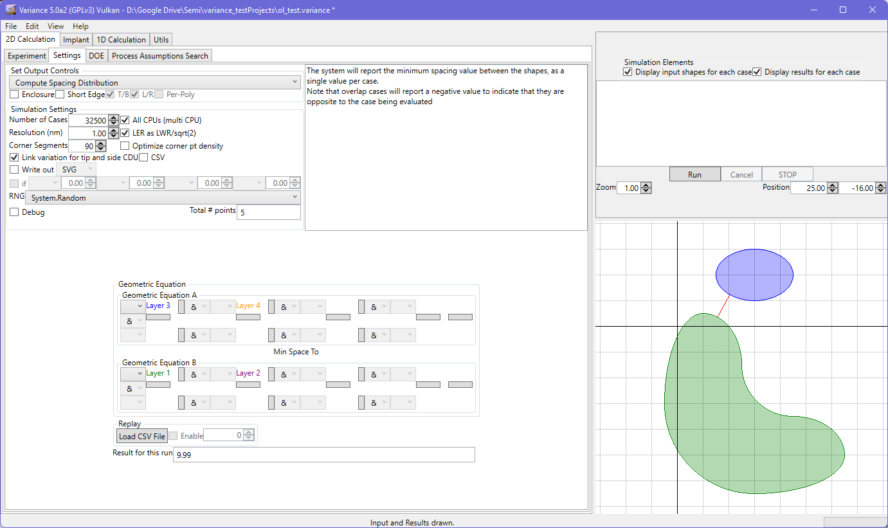
In the case of an overlap event, a maximum overlap value is reported with negative sign to indicate the opposite nature of the value.
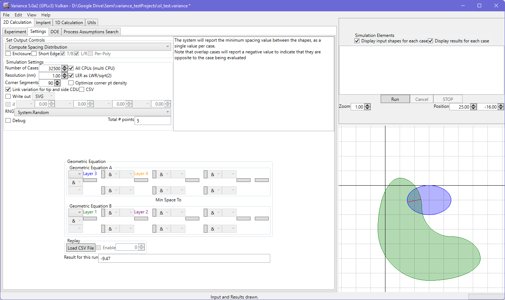
If the "shortest edge" option is checked, the overlap is evaluated by casting rays from the shortest edge and finding the longest ray length to the other side of the overlap. Rays are cast orthogonal to the edge segment. This use of the shortest edge makes the overlap detection neutral to the configuration of the layers. The evaluation of the shortest edge adds some small overhead to the calculation routine, but the benefit more than compensates:
In the absence of the "shortest edge" setting, the overlap is calculated using lines projected from the part of the overlap defined by the layer5/6/7/8 edges, which are projected until they intersect the edge from layer 1/2/3/4. If the layer order is reversed, the reported result will not be what you expect.
The debug option gives you the ability to see the rays being cast, to help visualize how the engine is assessing your simulation. No results are gathered with the debug mode set.
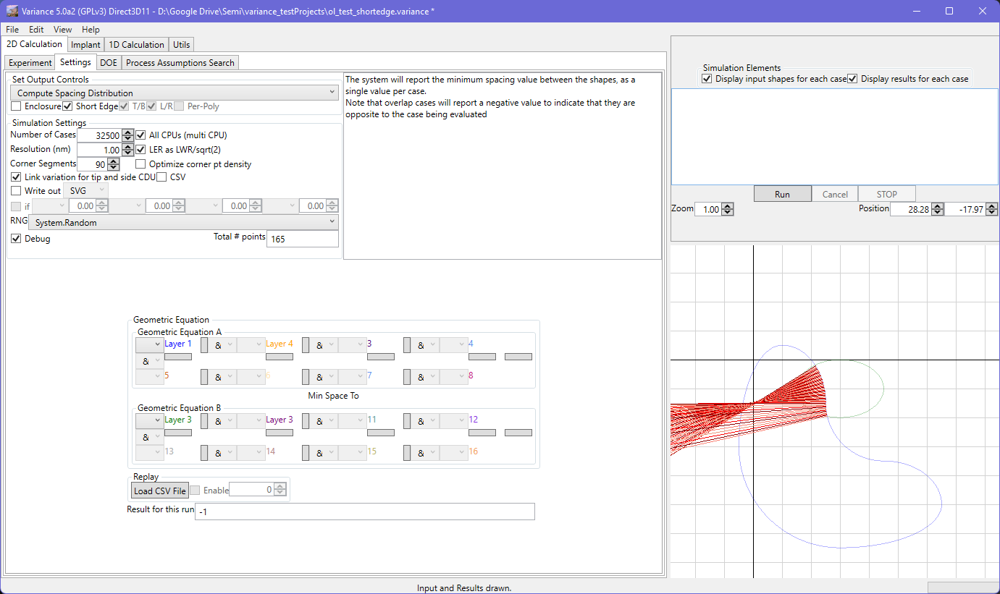
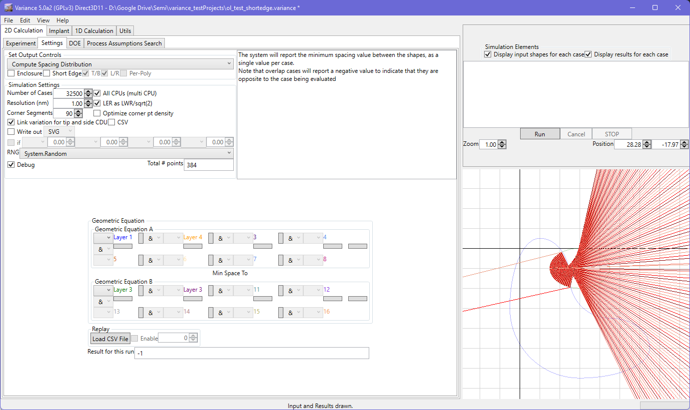
Averaged normals are used as a basis for the raycast, to handle rough geometry from LER.

When the enclosure checkbox is set, the enclosure value is assessed.
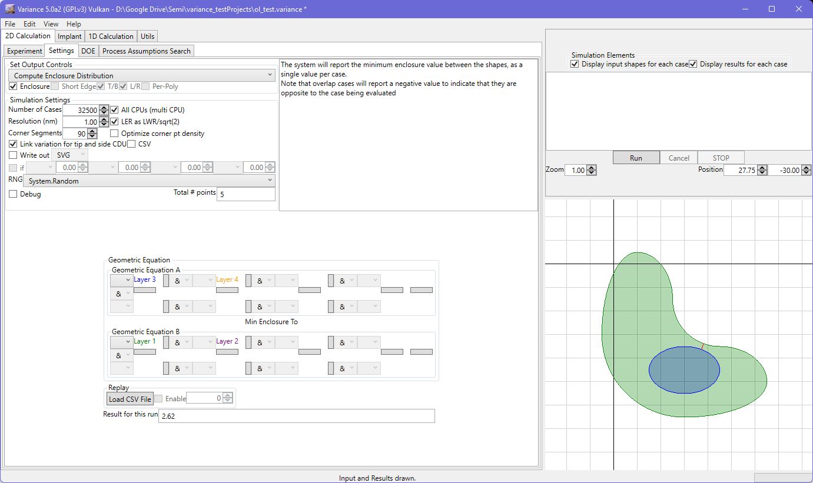
When the shapes overlap, the same projection approach is used to determine the maximum distance beyond the edge, This is reported as a negative value to indicate there is an absence of full enclosure :
Chord
Minimum chord length is measured with a fixed expectation that the result from Geometric Equation A is oriented to lie in the horizontal direction and the reqsult from Geometric Equation B is vertically oriented. This enables the top/bottom/left/right chord determination. Ignoring this will mean that the top/bottom and left/right result pairs will be transposed in the CSV output.
Any shapes are handled.
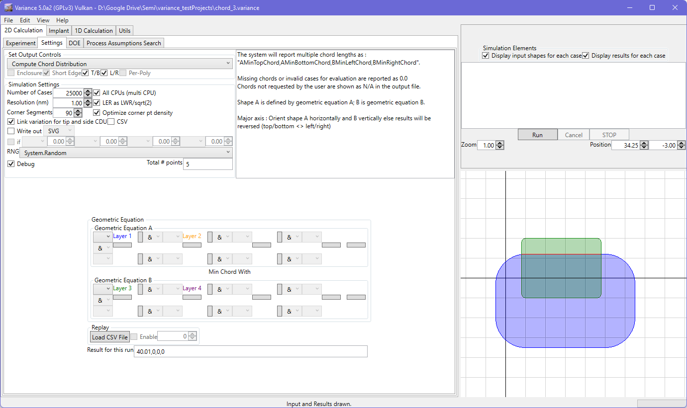
You can deselect pairs of chords. Those chords not measured will be reported as N/A in the output file.
To reinforce the earlier note, the example below shows how chord location is dependent on the horizontal and vertical orientation expectations for the geometric equations.
Angle
Intersection angle is delivered by the logical AND of polygons.
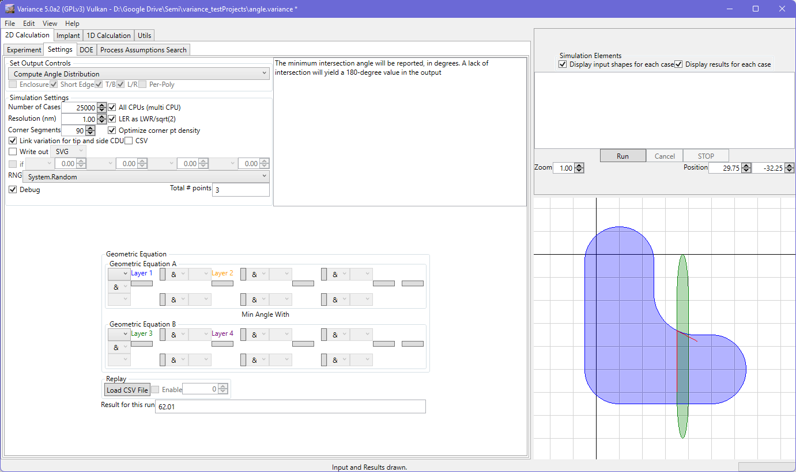